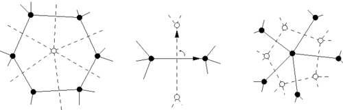

En esta sección va a aprender a poner un pequeño nudo en una caja, lo que yo llamo "encapsulación". Se basa en una noción matemática llamada "dualidad", pero ¡pare! No huir, es más fácil comenzar con un ejemplo para mostrar que 1. es fácil; 2. realmente lo necesita si desea hacer algo grande en el negocio del nudo celta.
Supongamos que se gusta el nudo de trébol (¡a mi me gusta mucho!) Y quiere hacer algo con él. Por ejemplo, una cruz. Como el trébol es codificado por un triángulo, intenta poner cuatro triángulos juntos. Después de mucho sudor, maldiciones y errores, termina con algo así:

Eso es muy bonito, pero requiere mucha afinación manual. Puede intentar ir más lejos y hacer una cruz más grande con cinco de estas pequeñas cruces. Después de un montón de malas palabras, puede obtener algo como esto:

Muy bonito, pero difícil de ajustar, ¿no? Si lo intentó, se dio cuenta de que no puede hacer cifras grandes y precisas de esta manera. Afortunadamente, hay otra manera, se llama encapsulación. Pero primero hay que aprender cosas acerca de una noción matemática (¡no grite y salga corriendo!):
Dualidad
Volviendo al trébol, supongamos que, cuando extraiga su gráfo, no coloque los vértices en el blanco sino en las regiones negras (ver Extracción). Por supuesto, la región infinita tiene que estar dividida en varios vértices no sólo uno y estos vértices están simbolicamente fusionados entre sí por una pared continua que rodea todo el nudo. En imágenes en lugar de palabras, se terminaría con figura c, no figura b:

Lo que acaba de ver es la construcción del gráfo dual del triángulo. Una vez que tenga el gráfo, no se necesita el nudo mas, puede construir su dual inmediatamente: Los vértices del gráfo dual están en la mitad de las aristas del gráfo original y sus aristas son transversales a cada arista primal: 
Por ejemplo, las redes triangulares y hexagonales son duales entre sí. El doble de un triángulo es una porción de la red hexagonal.

Ahora se ve que es más fácil formar una pequeña cruz usando el gráfo dual, el nudo es completamente dentro de una caja ¡una cápsula triangular! Solo hay que dibujar un cuadrado, añadir sus dos diagonales para hacer cuatro triángulos, copiar el motivo dual dentro de cada triángulo y abrir algunas aristas en las paredes para que los tréboles se funden en uno. En fotos:


Y es aún más fácil construir una cruz más grande, simplemente apilar cinco cuadrados como ese y abrir algunas puertas para dejarles escapar de sus cajas:

Así que la filosofía es que para hacer un enlace grande, primero hay que encontrar pequeños nudos que le gustan, elabora su gráfo dual que se adjuntan en una cápsula y utilizar estos cuadros para azulejar el área que desea diseñar. Echemos un vistazo a otro ejemplo. Jugando con redes triangulares, tropezó con ese bonito motivo:

Para hacer algo con él, primero tiene que elaborar su gráfo dual:

Entonces usted puede hacer por ejemplo una estrella de cinco ramificados:

Ahora si quieres hacer nudos que tienen un principio y un final, tienes que cambiar a la versión anterior del sitio y buscar enredos.